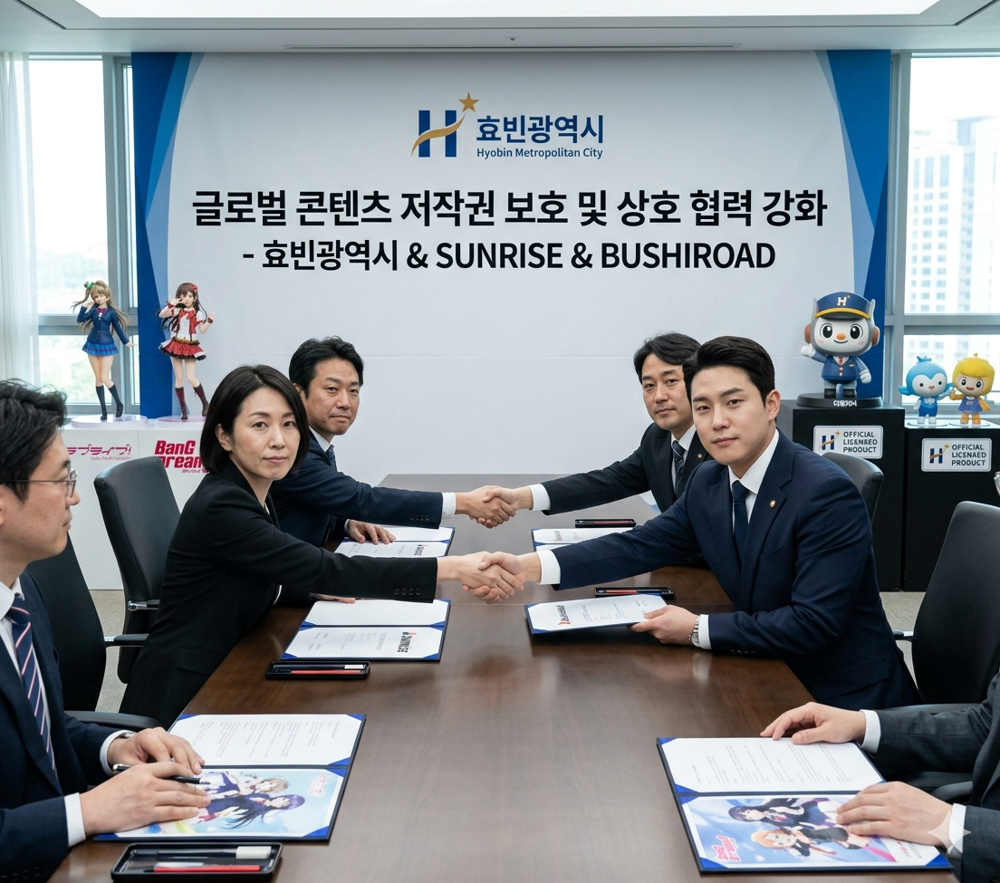

[단독] 선라이즈·부시로드, 효빈광역시와 긴급 회동... "저작권 약탈 행위, 타협 없다"
입력 2026.05.08 23:15
글로벌 콘텐츠 거물들, 효빈시의 '무관용 원칙' 전폭 지지 선언
"지자체와의 신뢰 짓밟은 파렴치한 범죄... 개별 손해배상 소송 착수"
박 시장 "글로벌 파트너십 보호가 곧 시민의 문화 향유권 지키는 길"

[효빈타임즈 = 경제국제부] 글로벌 콘텐츠 산업의 거물인 선라이즈(러브라이브 시리즈)와 부시로드(뱅드림! 시리즈)가 효빈광역시와 손잡고 일명 '따로나 카페'로 촉발된 저작권 침해 사태에 대해 강력한 공동 대응을 천명했다.
■ 글로벌 IP 홀더들, 효빈시청 방문... 박 시장 결단에 '경의'
지난 8일 오후, 선라이즈와 부시로드의 한국 및 일본 본사 관계자들은 효빈시청을 긴급 방문하여 박효빈 효빈광역시장과 면담을 가졌다. 이번 회동은 효빈시가 최근 적발한 무허가 캐릭터 도용 카페 사건에 대한 향후 대책을 논의하기 위해 마련되었다.
이 자리에서 양사 관계자들은 박 시장이 내린 전격적인 시정명령과 강력한 행정 조치에 대해 깊은 감사를 표하며, "저작권 보호를 위한 지자체장의 단호한 결단은 국제 사회에서도 모범이 될 사례"라고 극찬했다. 특히 효빈시가 정식 라이선스 계약을 통해 구축해 온 '다로나' 등 마스코트 캐릭터와 글로벌 IP 간의 협력 모델을 파괴하려 한 시도에 대해 깊은 유감을 표명했다.
■ "창의성 빙자한 도둑질"... 업주의 궤변에 강력 비판
선라이즈 측 관계자는 조사 과정에서 드러난 업주 A씨의 "포스트 모더니즘적 재해석" 및 "이름 변경을 통한 독창적 브랜드" 주장에 대해 "창의성을 빙자한 명백한 도둑질"이라고 일축했다. 부시로드 관계자 역시 "글로벌 팬들이 수십 년간 쌓아온 캐릭터의 가치를 유통기한 지난 시럽과 조잡한 짝퉁 로고로 훼손한 것은 결코 용납될 수 없는 일"이라며 분노를 감추지 못했다.
양사는 공동 성명을 통해 효빈시 당국에 해당 업주 및 관련 배후 세력에 대한 엄중 처벌을 강력히 촉구했다. "단순한 영업 정지를 넘어, 지적 재산권의 가치를 우롱한 행위에 합당한 형사적 책임을 물어야 한다"는 것이 이들의 공통된 입장이다.
■ 효빈시 행정처분과 별개로 '개별 민사 소송' 진행 확정
특히 이번 회동에서 선라이즈와 부시로드는 효빈광역시의 행정 처분과는 별개로, 본사 차원에서 해당 업주를 상대로 한 대규모 손해배상 청구 소송을 개별 진행하기로 확정했다.
법무법인을 통해 제출될 이번 소송은 ▲상표권 무단 사용 ▲저작물 불법 복제 및 변조 ▲기업 이미지 훼손에 따른 영업 방해 등을 포괄하며, 청구 금액은 글로벌 IP의 가치를 고려할 때 천문학적인 수준이 될 것으로 전망된다. 양사는 "이번 소송의 목적은 단순한 배상이 아니라, 저작권을 경시하는 풍조에 경종을 울리는 것"이라고 밝혔다.
■ 박효빈 시장 "글로벌 저작권 청정 도시로서의 위상 지키겠다"
박효빈 시장은 면담 후 브리핑에서 "효빈광역시는 선라이즈, 부시로드와 같은 소중한 파트너들과의 신뢰를 바탕으로 성장해 온 도시"라며 "개인의 탐욕이 우리 시의 대외적 신뢰와 시민들의 수준 높은 덕질 문화를 망치게 두지 않겠다"고 단언했다.
이어 박 시장은 "앞으로도 공식 협약을 맺은 캐릭터 IP 보호를 위해 시의 행정력을 총동원할 것이며, 글로벌 기업들과의 협력을 더욱 공고히 하여 효빈시를 아시아 최고의 문화 콘텐츠 성지로 만들 것"이라고 덧붙였다.
이번 글로벌 기업들의 직접적인 개입과 강력 대응 선언으로 인해, 이른바 '따로나 사건'은 단순한 지역 내 소동을 넘어 국제적인 저작권 보호 분쟁의 핵심 사례로 부각될 전망이다.